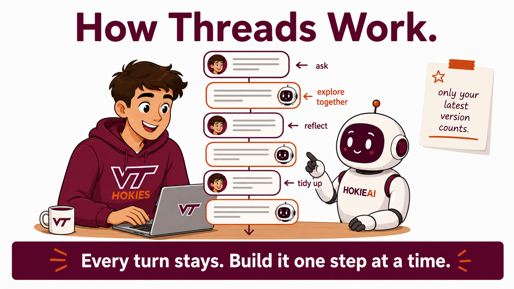
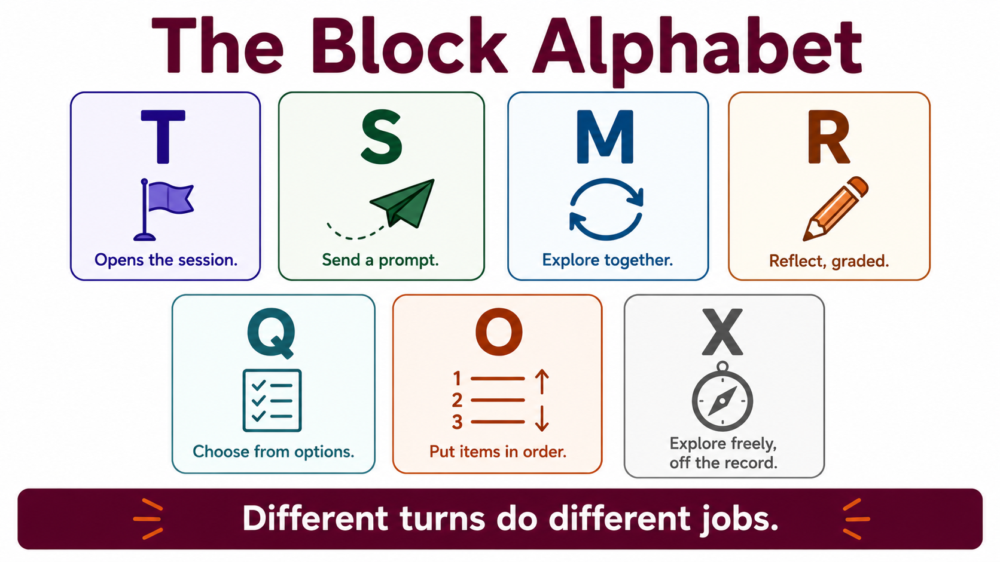

By the end of this lecture, students will be able to:
- Explain why an AI conversation is persistent and why each session of this course is kept in a single unbroken thread.
- Identify each block type in the course alphabet: T, S, M (OPEN/CLOSE), X, Q, O, R.
- Describe what the AI does differently for each block type based on the ai_interaction protocol.
- Apply the last-block-wins and X-block principles to their own thread hygiene.
- Reflect on a specific moment from the M block exchange where meaning emerged from the interaction.
- Compare what they noticed in their own exchange with what a classmate noticed in theirs.


On Tuesday you opened HokieAI, pasted a session opener, talked with it for thirteen minutes, and wrote a short reflection. Two of those were blocks, T and R, although nobody named them at the time.
Today you learn the structure that names them and meet the four block types you have not used yet. Everything you send and everything HokieAI replies is kept, so the conversation is persistent. Each class meeting is its own session, opened with a T block and exported at the end, and everything you do in that meeting stays in one unbroken thread.
The session ends with a short reflection on one moment from your own exchange.
On Tuesday you pasted a session opener and wrote a reflection. Both were blocks, T and R, though nobody called them that at the time. Between them you talked with HokieAI for thirteen minutes with no structure at all.
Today that conversation gets a name. You will identify what T and R were doing, meet S, X, Q, and O, and see the seven of them as one system. Watch the reply after each paste. The difference between one sentence and a full answer is the protocol becoming visible.
Copy this block and paste it into Hokie AI to begin your session.
The next block is an S block, a prompt you paste exactly as written. HokieAI will engage with it and answer at some length. Watch how different that reply is from the single sentence the session opener received. The difference between the two is the protocol working.
Open the block first. The opening marker tells HokieAI that you are starting, so it will acknowledge the block and wait. Then send one of the two messages below. Each one asks HokieAI to do something and then to show you its own reasoning, which is what gives you something to push on.
"I have to explain to someone in my family why a business student is taking a course about artificial intelligence. Write two sentences I could actually say out loud, then tell me what you assumed about me in order to write them."
"I want to get something useful out of a professor's office hours this semester. Before you suggest anything, ask me the three things you would most need to know to give advice I could actually use."
Read the first reply closely. If it assumed something about you that is wrong, correct it. If it asked you something, answer it. Then send one more message that pushes on whatever came back. You will send three messages and receive three replies. Then paste the closing marker.
- Click Copy opening marker and paste it into Hokie AI to begin this block.
- Interact with Hokie AI: ask questions, explore, respond. All of this exchange belongs to this block.
- When finished, use the Copy closing marker button below to close the block in your thread.
When you have finished your exchange, copy this closing marker and paste it into Hokie AI to close the block.
An X block gives you space for an ungraded question or a follow-up. It stays in the thread record like everything else you send. Start a new message with three hash marks and a capital X, then write your question underneath.
Ask one question that grew out of your M exchange. Read the reply, and continue once more if it gives you somewhere to go.
The next two blocks are demonstration only, and nothing you select in either one is graded. A Q block is a structured selection, used later in the semester for quizzes, peer evaluations, and self-assessments. Make your selections below, click Copy, and paste the result into HokieAI. Watch the reply, because a Q block receives one sentence of acknowledgment.
Make your selections below, then click Copy and paste into Hokie AI.
An O block puts items in order. Use the arrows until the ranking matches your judgement, then copy and paste as before. Demonstration only again.
Use the up and down arrows to reorder the items. Place the most difficult block at the top.
- S blocks
- M blocks
- R blocks
- X blocks
Stop typing and turn to the person next to you for three minutes. Each of you describes one specific moment from your M exchange and explains what changed after that moment. Listen for one similarity or one difference between the two exchanges.
You pasted the same blocks in the same order, and you wrote different messages inside M. Comparing those moments will show you what came from the shared structure and what emerged inside each exchange.
The reflection below is the only graded block today. In fifty to one hundred words, say where the meaning came from in your M block exchange. The question is a real one. Did it come from the structure the system gave you, from what HokieAI said, or from you reading and making sense of what came back? Cite one specific moment, something HokieAI said or something you noticed in how the exchange unfolded, and say what it tells you. Write it yourself, in your own words, and do not ask HokieAI to draft it.
Write your response in the box below (target: 50–100 words), then click Copy and paste into Hokie AI.